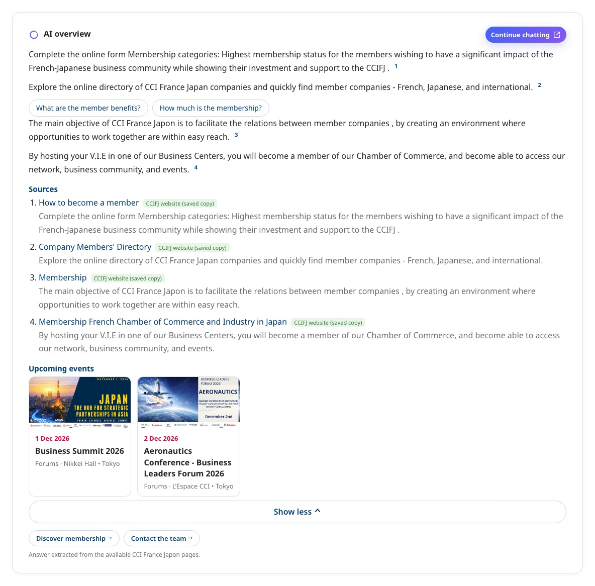
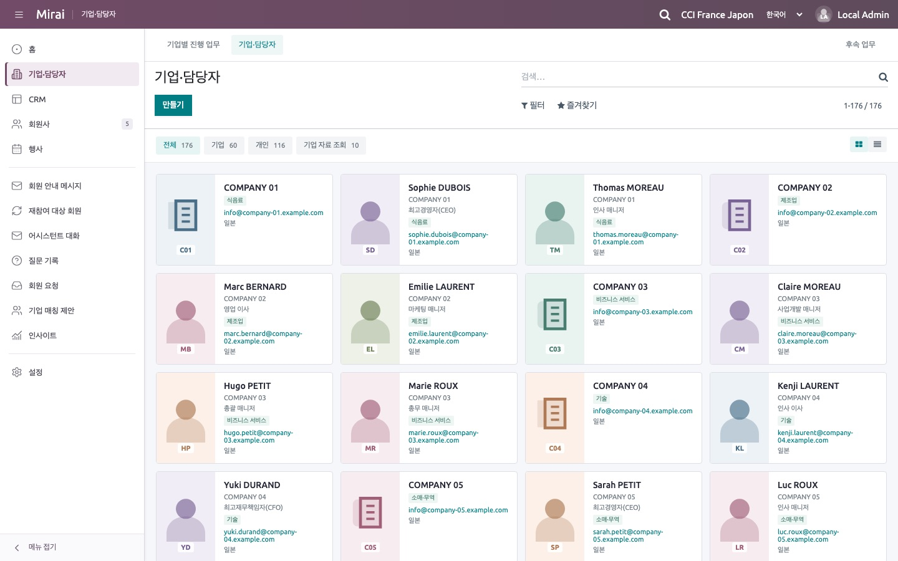
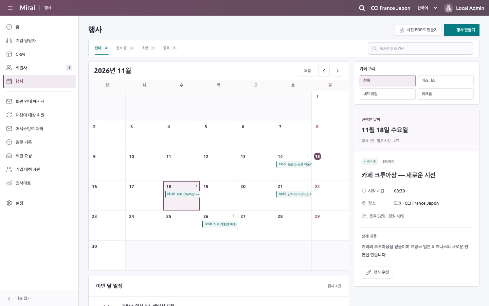
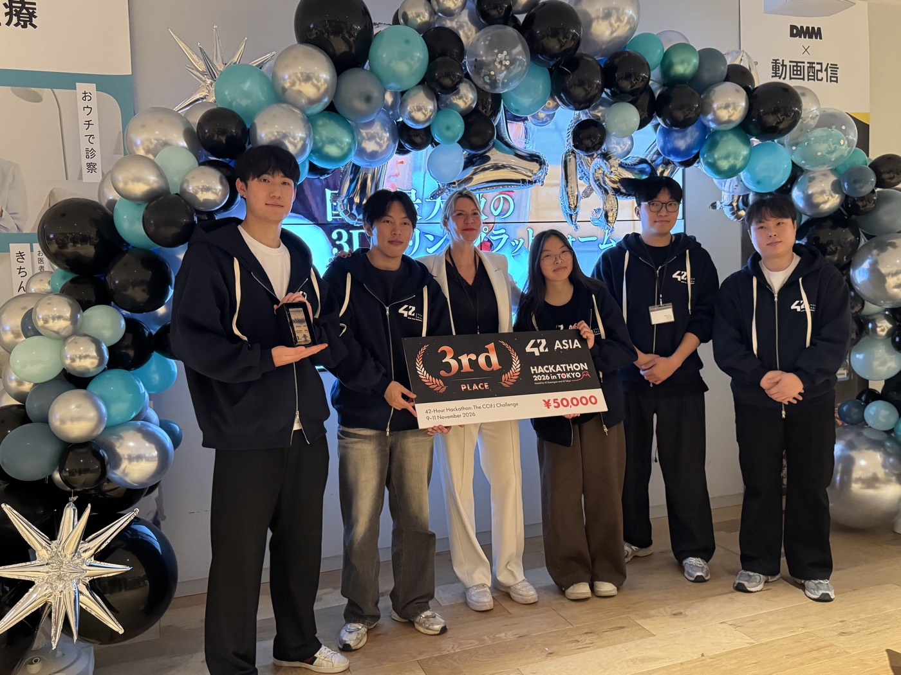

A1 방문자 · 회원
Multilingual Concierge
RAG 기반 다국어 컨시어지
모든 답에는 근거가 있고, 그 근거는 누구나 확인할 수 있습니다. 홈페이지·회원 채팅·WhatsApp·Prisme.ai에서 같은 A1이 답합니다.
42 GYEONGSAN × 42 TOKYO · 2026.11
TEAMMirai未来
The CCIFJ Challenge 3위 · ¥50,000
주일 프랑스상공회의소(CCIFJ)의 가장 큰 자산인 회원 네트워크를 더 강하게 만드는 AI 에이전트 4종. 답에는 출처가 붙고, 회원이나 기업에 보내는 것은 직원이 승인해야만 나갑니다.

상황Situation
42시간 동안 주일 프랑스상공회의소(CCIFJ)를 위한 AI 에이전트를 만드는 과제였습니다. 실제 웹사이트와 CRM에 붙일 수 있는 구조를 데모로 보여줘야 했습니다.
과제Task
5인 팀에서 저는 에이전트 네 개가 올라갈 웹 플랫폼과 인프라를 맡았습니다. 실제 주소로 서비스를 띄우고, 에이전트가 만든 제안이 직원 확인 없이 나가지 않게 하는 것이 목표였습니다.
행동Action
원본 사이트를 그대로 복제한 위에 AI 화면을 얹고, 에이전트와 주고받을 데이터 형식을 먼저 정해 팀원과 동시에 개발했습니다. 직원이 확인한 내용만 발송되게 했고, WhatsApp 상담·문서 자료실·Azure 배포도 만들었습니다.
결과Result
The CCIFJ Challenge에서 3위를 받았습니다. 배포된 사이트에서 질문부터 직원 승인, CRM 기록까지 실제로 동작했고, 팀 평가에서 상담 에이전트는 138번 중 1번만 근거 없는 답을 했습니다.
42에서 하던 대로, 에이전트를 만들기 전에 CCIFJ부터 이해했습니다. 결론은 하나였습니다. CCIFJ의 가장 큰 자산은 회원 네트워크입니다. 그래서 네트워크를 더 강하게 만드는 에이전트를 설계했고, 실제로 쓸 수 있도록 공개 웹사이트를 그대로 복제한 위에 배포했습니다.
사이트·서비스·행사를 먼저 읽고 문제를 다시 정의
네 에이전트가 한 흐름으로 이어지게
원본 791페이지를 복제하고 그 위에 Azure 배포
A1 방문자 · 회원
RAG 기반 다국어 컨시어지
모든 답에는 근거가 있고, 그 근거는 누구나 확인할 수 있습니다. 홈페이지·회원 채팅·WhatsApp·Prisme.ai에서 같은 A1이 답합니다.
A2 회원
개인 회원 매니저
새 회원에게 목표와 관심사를 묻고, 맞는 행사·서비스를 추천하면서 왜 맞는지도 설명합니다.
A3 직원
근거 기반 B2B 매칭
소개 요청을 후보 기업과 조건별 근거로 정리합니다. AI는 결정하지 않고, 직원이 승인합니다.
A4 직원 · 운영
수요 인사이트
앞의 세 에이전트에서 모인 데이터로 회원이 원하는 것, 수요가 큰 서비스, 필요한 연결을 보여줍니다.
회원직원다음 결정 네 에이전트는 하나의 흐름으로 이어집니다.



Mirai 시스템 구성
상자에 마우스를 올리거나 누르면 연결이 밝아지고 아래에 설명이 나옵니다.
● 내 담당팀원
하는 일
● 표시와 보라 테두리가 제가 맡은 부분이고, 회색 상자는 팀원이 맡았습니다.
보는 법
상자를 누르면 설명이 고정되고, 다시 누르면 풀립니다.
이유
연결된 상자와 선만 밝게 남아서 데이터가 어디로 흐르는지 보입니다.
1/138
근거 없이 지어낸 답변
A1 · 46개 케이스 × 3회 · 영어·프랑스어·일본어
“We don’t trust what the AI says about itself. We measure what it does.”
발표 중에서팀이 함께 만든 평가입니다. Mistral 구성 기준이며, 케이스별 질문·응답·판정은 저장소 evaluation/a1에 공개돼 있습니다.
사전 회의 11회, 에이전트 구조를 미리 검증
16:30 시작, 21:34 원본 사이트 복제로 전환
00:27 Azure 첫 배포 → 에이전트 연결 → WhatsApp
마감 6분 전 마지막 PR 머지, 16:29 3위

WHY “MIRAI”
팀 이름 Mirai는 한국어와 일본어에서 같은 소리로 ‘미래’라는 뜻입니다. 42 Tokyo와 42 Gyeongsan이 함께 연 해커톤에서 싱가포르·이르비드·방콕의 동료들과 같이 배우며 만들었습니다.
For us, Mirai means building a better future together.